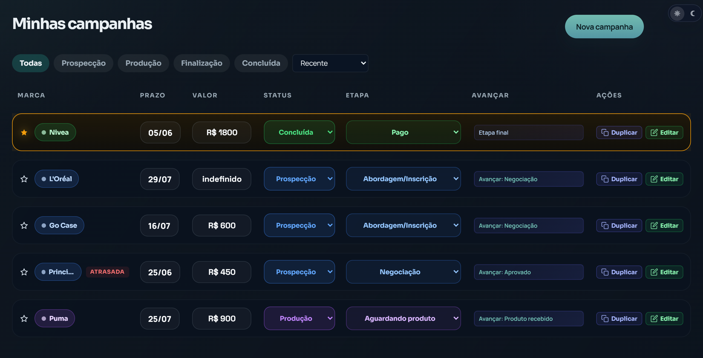

Campanhas escapam quando tudo fica espalhado.
Briefing, proposta, envio, aprovação e pagamento. Quando cada etapa está em um lugar, alguma coisa inevitavelmente se perde.
O Makerline centraliza campanhas, prazos, propostas, prospecção, entregas e pagamentos para creators UGC que querem trabalhar como profissionais, sem depender de WhatsApp, planilhas soltas ou Notion bagunçado.
Por enquanto, o Makerline está em fase de lançamento. Os primeiros inscritos acessam o produto uma semana antes da liberação oficial.
Você fecha campanhas, entrega conteúdo e conquista marcas. Mas, no fim do dia, ainda gasta energia tentando lembrar o que falta entregar, quem ainda vai pagar e qual campanha está atrasada.
Briefing, proposta, envio, aprovação e pagamento. Quando cada etapa está em um lugar, alguma coisa inevitavelmente se perde.
Pagamentos atrasados, campanhas sem status e marcas que somem viram ansiedade e dinheiro parado.
Quanto mais campanhas entram, mais o improviso quebra sua operação.
Pipeline de campanhas, controle de prazos, gestão de pagamentos e prospecção de marcas. Do primeiro contato até o dinheiro na conta, sem depender da memória ou de cinco ferramentas ao mesmo tempo.
Campanhas com status, prazos, valores e próximos passos em uma visão clara.

Organize marcas, propostas, retornos e oportunidades comerciais sem depender de planilhas soltas.

Acompanhe campanhas ativas, valores a receber, atrasos e evolução da sua rotina como creator.

O Makerline entra quando o talento já existe, mas a operação precisa acompanhar o crescimento.
Você já fecha campanhas com marcas.
Você usa WhatsApp, planilha ou Notion para se organizar.
Você quer controlar prazos, entregas e pagamentos.
Você quer crescer sem transformar sua rotina em caos.
O Makerline transforma cada campanha em etapas visíveis para você saber o que precisa negociar, produzir, entregar, cobrar e acompanhar.
Registre contatos, propostas enviadas, retornos e próximas ações comerciais.
Controle briefing, produção, envio, aprovação, revisão e status de cada entrega.
Tenha clareza sobre pagamentos pendentes, campanhas atrasadas e evolução do mês.
Respostas diretas para creators que querem profissionalizar a operação sem montar um sistema improvisado do zero.
Makerline é um sistema web para creators UGC organizarem campanhas, prazos, propostas, prospecção, entregas e pagamentos em uma operação profissional.
Para creators UGC que já fecham ou querem fechar campanhas com marcas e precisam sair de planilhas, WhatsApp e ferramentas soltas.
Sim. A proposta é centralizar a rotina comercial do creator UGC em um painel próprio, com campanhas, marcas, prazos, valores e próximos passos.

"Muito intuitivo. Tive contato com outra plataforma e fiquei perdida. No Makerline fiquei zero perdida. As funções estão muito bem colocadas, e o que testei até agora é nota 10."@keilabraganteugc

"Muito melhor do que fazer planilha. Está tudo organizado, tem o dashboard e te mostra exatamente onde você está. Tem aplicativo melhor que esse?"@rickolavo

“Gostei bastante da funcionalidade e praticidade. Achei muito intuitivo e fácil de usar. Parabéns por criar um app que ajuda nós creators a organizar melhor nossos trabalhos, realmente é uma necessidade que temos.”@beigianenobre
Vamos liberar os primeiros acessos para creators que querem organizar campanhas, prazos e pagamentos antes do lançamento oficial.